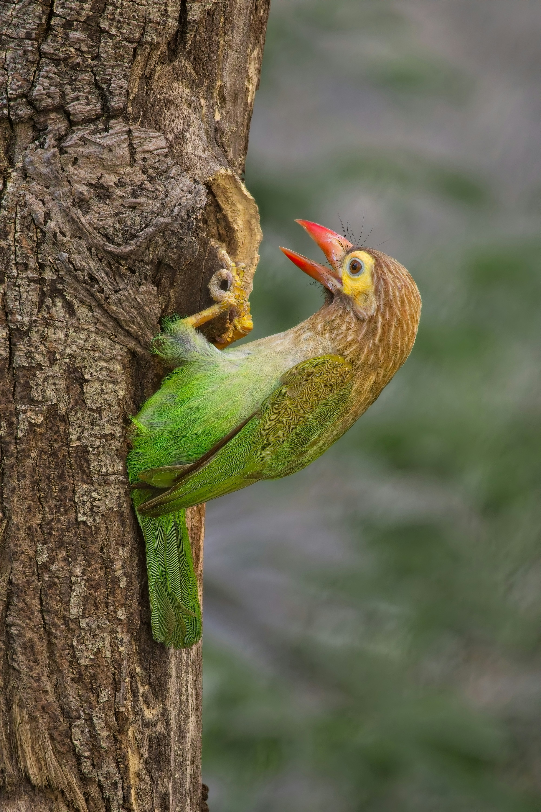

The Brown-Headed Barbet is a chunky green bird with a brown head, a powerful bill, and a distinctive deep call. It is commonly found in wooded areas, gardens, plantations, groves, and forest edges. Fruits and berries, particularly figs, form an important part of its diet, although it may also take insects and other small food items. The strong bill is useful not only for feeding but also for excavating cavities in trees in which the birds can nest. Brown-Headed Barbets often remain hidden among foliage, so their repeated calls can be easier to notice than the birds themselves. Their steady presence is an important part of the soundscape of wooded landscapes.
Family: Megalaimidae